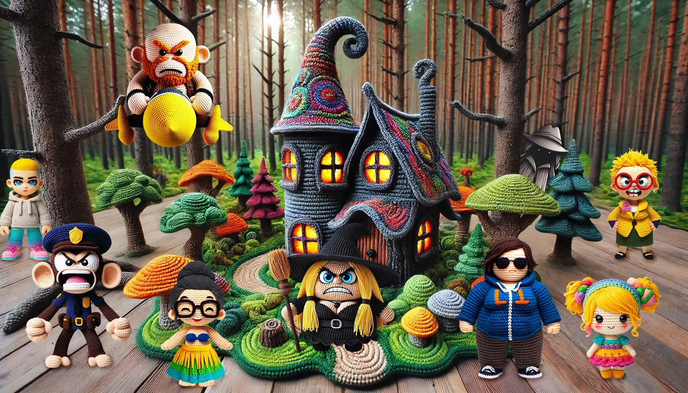
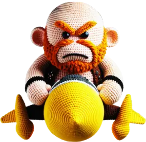
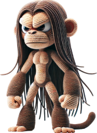
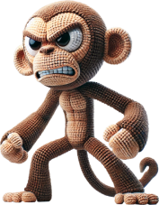
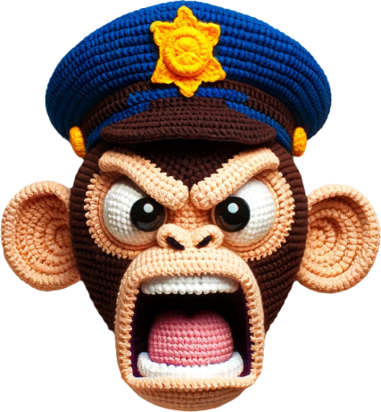
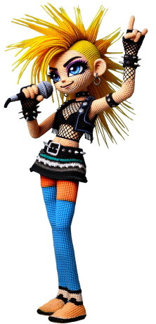
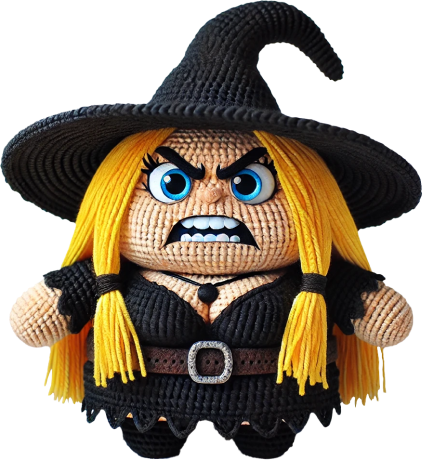

LETS ANALYZE DATA!
SPTV TOXIC CHAT
HOW MEAN CAN THEY GET

GET TO KNOW THE METHODOLOGY USED TO GET THIS DATA and full report.
On November 20, 2023, Aaron Smith-Levin was removed from the board of The Aftermath Foundation. Following this event, Aaron and his associated channels initiated a campaign against the Foundation and its members across YouTube chats.
This report aims to analyze the level of toxicity in these chats, particularly focusing on the negative impact on The Aftermath Foundation and its members.
LET'S LOOK AT SOME NUMBERS


2.571.322
messages

11 CHANNELS analyzed
TIMELINE: since Monday, November 20, 2023
CLICK ON EACH GRAPHIC TO BE ABLE TO INTERACT WITH THEM, and ZOOM.
The script leverages the Detoxify model to perform a comprehensive toxicity analysis on YouTube live chat data.
The process begins with loading and filtering the chat data, focusing on messages posted after a specific date. The script identifies messages mentioning key individuals or containing common phrases, filtering out those that match predefined common phrases. It then applies the Detoxify model to batches of messages, predicting toxicity and other related scores such as severe toxicity, obscenity, threats, insults, and identity attacks. A threshold is used to classify messages as toxic.
The line chart titled "Daily Average Toxicity Rate" shows fluctuations in the average toxicity rate of messages over time, from late 2023 to mid-2024. The chart reveals significant variability in toxicity rates, with spikes occurring sporadically throughout the period. Some days exhibit notably higher toxicity rates, reaching close to 0.2, indicating that nearly 20% of the messages on those days were toxic.


Toxicity by person
Mitch has the highest toxicity rate at 9.38%, with 232 out of 2,474 messages about him being toxic. Chris Shelton and Stephanie also have high toxicity rates at 8.68% and 8.3%. In contrast, Rinder, despite being mentioned the most (7,537 times), has a lower toxicity rate of 5.28%, indicating less toxic discussion around him. This chart highlights which individuals are most targeted by toxic language.
Mitch has the highest toxicity rate, with approximately 9.38% of the messages mentioning him being toxic (232 out of 2,474 total messages).
The bar chart titled "Toxicity by Person" illustrates the toxicity rates of messages mentioning specific individuals. The chart reveals that Mitch has the highest toxicity rate, with approximately 9.38% of the messages mentioning him being toxic (232 out of 2,474 total messages).
Chris Shelton and Stephanie also show high toxicity rates of around 8.68% and 8.3%, respectively. In contrast, individuals like Michelle and The Aftermath organization have much lower toxicity rates, indicating fewer toxic messages relative to the total number of mentions.
Rinder has the highest total number of mentions (7,537), but his toxicity rate is lower at 5.28%, suggesting that although he is frequently discussed, the conversation surrounding him is less toxic compared to others. This chart highlights which individuals are more frequently targeted with toxic language.
TOXICITY by channel
The chart shows that the "Oh No Nora" channel has the highest toxicity rate, with approximately 9% of its messages being toxic, which translates to 310 toxic messages out of 3,541 total messages. Other channels like "SergeDelMar" and "Growing Up In Scientology" also exhibit higher toxicity rates of around 6% and 4.5%, respectively.
The remaining channels have relatively lower toxicity rates, ranging from about 2% to 4%. This suggests that certain channels may have more toxic environments compared to others, with "Oh No Nora" standing out as particularly problematic.


Global Distribution of Attack Types
Key Observations:
Insults are the most common form of attack, followed closely by obscenity.
Threats and identity attacks are much less frequent, indicating that while general rudeness and vulgarity are common, more severe forms of targeted harassment are less frequent.
This global view reinforces the idea that most toxicity in these discussions manifests as rude or vulgar language rather than direct threats or identity-based attacks.
TYPES ATTACKS PER CHANNEL
Types of Attacks Suffered per Channel
This bar chart categorizes different types of toxic attacks (severe toxicity, obscenity, threats, insults, identity attacks) suffered across various YouTube channels.
Key Observations:
"Oh No Nora" and "Growing Up In Scientology" of attack across most channels, with very few instances of threats or identity attacks.
Insults and obscenity are the dominant forms of attack across most channels, with very few instances of threats or identity attacks.This suggests that the discourse on these channels is particularly harsh and vulgar, likely contributing to a toxic environment.


TYPES ATTACKS PER PERSON
Key Observations: Rinder and Mitch are the most targeted individuals, with high levels of insults and obscenity.
Stephanie and the Headleys also face significant levels of toxic behavior, though less than Mitch and Rinder.
Again, insults and obscenity dominate, with very few instances of severe toxicity, threats, or identity attacks.
This suggests that these individuals are subject to widespread verbal abuse and vulgarity, potentially due to their visibility and roles within the community or discussions.
MOST TOXIC MESSAGES BY USERS
ToxicityScore: 0.9988
Message: Matt Pesch is a fucking criminal just like Mike Rinder. Also? A dumbass POS.You should be fucking EMBARRASSED Amy Scobee!!!
Mentioned Person: Amy Scobee
Author: Blake Reed
Channel:Growing Up In Scientology
ToxicityScore: 0.9987
Message: Stop acting like a fucking expert Mitch your cult is showing
Mentioned Person: MITCH
Author: AcuPunk
Channel: OhNo Nora
ToxicityScore: 0.9981
Message: Doug would fuckjng hate you right now Mitch!!!!!
Mentioned Person: MITCH
Author: KornFreakDBSC
Channel: OhNo Nora
ToxicityScore: 0.9970
Message: Also my Mom’s a hardworking teacher, so fuck you Stefani
Mentioned Person: Stephanie
Author: Blake Reed
Channel: OhNo Nora
ToxicityScore: 0.9965
Message: Yeah well Mitch can fucking be homeless see if we care
Mentioned Person: MITCH
Author: Blake Reed
Channel: OhNo Nora
ToxicityScore: 0.9964
Message: @Bitch Mrisker. I would say people are being deceived and used by a so calledreligion”
Mentioned Person: RINDER
Author: Seagirl
Channel: OhNo Nora
ToxicityScore: 0.9963
Message: suck it Rinder
Mentioned Person: RINDER
Author: lori Lorilori
Channel:Relatable Reese
ToxicityScore: 0.9963
Message: B*tch you GOT USED. You got PLAYED. You’re not a hero Stefani, F*ck out of herewith that sh*t!
Mentioned Person: Stephanie
Author: Blake Reed
Channel: OhNo Nora T
oxicityScore: 0.9962
Message: Stefani is a hateful bitch! How dare she capitalize on your trauma! DISGUSTING!
Mentioned Person: Stephanie
Author: WestCoastFancyNancy
Channel:Growing Up In Scientology
ToxicityScore: 0.9962
Message: WTF!!!!! No Mike you didn’t start the AF, go F*** yourself!!
Mentioned Person: RINDER
Author: LydiaVonStretchClaw
Channel:Scientology - Life After a Cult
Most Toxic Author Globally: AcuPunk3
Most Toxic Authors Per Channel
Channel: Coffee, Cults and Crafts
Most Toxic Author: Airdrie (Avg. Toxicity: 0.9922)
Channel: Growing Up In Scientology
Most Toxic Author: Restoring Reality (Avg. Toxicity: 0.9947)
Channel: Kelli Copter
Most Toxic Author: Mrs_Valentine (Avg. Toxicity: 0.9872)
Channel: LARA FM
Most Toxic Author: Blake Reed (Avg. Toxicity: 0.9731)
Channel: Liz Ferris
Most Toxic Author: Joker (Avg. Toxicity: 0.9894)
Channel: Liz Gale
Most Toxic Author: Doug (Avg. Toxicity: 0.9448)
Channel: Oh No Nora
Most Toxic Author: AcuPunk (Avg. Toxicity: 0.9987)
Channel: Poe On the GO
Most Toxic Author: follybeachusa (Avg. Toxicity: 0.9822)
Channel: Relatable Reese
Most Toxic Author: lori Lorilori (Avg. Toxicity: 0.9963)
Channel: Scientology - Life After a Cult
Most Toxic Author: LydiaVonStretchClaw (Avg. Toxicity: 0.9962)
Channel: SergeDelMar
Most Toxic Author: JL (Avg. Toxicity: 0.9898)
RINDER:
Toxic messages: 398
Total mentions: 7537
Toxicity rate: 5.28%
MITCH:
Toxic messages: 232
Total mentions: 2474
Toxicity rate: 9.38%
HEADLEYS
Toxic messages: 149
Total mentions: 6257
Toxicity rate: 2.38%
Stephanie:
Toxic messages: 117
Total mentions: 1409
Toxicity rate: 8.30%
Chris Shelton:
Toxic messages: 57
Total mentions: 657
Toxicity rate: 8.68%
ALEX:
Toxic messages: 49
Total mentions: 1551
Toxicity rate: 3.16%
THE AFTERMATH:
Toxic messages: 33
Total mentions: 1922
Toxicity rate: 1.72%
REMINI:
Toxic messages: 15
Total mentions: 424
Toxicity rate: 3.54%
Amy Scobee
Toxic messages: 6
Total mentions: 86
Toxicity rate: 6.98%
ToxicityScore: 0.9947
Message: How wonderful when you closest friends just completely FUCK YOU OVER! GreatJob, Mike, Mark and Claire!
Author: Restoring Reality
Channel:Growing Up In Scientology
ToxicityScore: 0.9941
Message: @Eloise I bet you he probably did cry like a little bitch. Little bitchbrisker. Waaaaa Claire Aaron’s telling people the truth about me! Waaaa!!!
Author: Blake Reed
Channel: OhNo Nora
ToxicityScore: 0.9904
Message: Idon’t want Marc Headley’s sister to suck my toes! Please no
Author: Chemist
Channel: OhNo Nora
ToxicityScore: 0.9822
Message: Agreed Amber. MR & Headleys are the ones fucking up here for sure
Author: follybeachusa
Channel:Poe On the GO
ToxicityScore: 0.9797
Message: @Melissa Halvorson, MD well that’s Marc’s cringey ass for you, he’s a loser.
Author: Blake Reed
Channel:Liz Ferris
ToxicityScore: 0.9698
Message: Claire is a jerk....
Author: LSaka Chester's Mom
Channel:Growing Up In Scientology
ToxicityScore: 0.96944
Message: Marc seems to be being that nastiest and that sucks..
Author: Auntie M
Channel:Liz Ferris
ToxicityScore: 0.9508
Message: Amy is such a suck-up to claire. It was sick to watch them together.
Author: Sammy
Channel:Growing Up In Scientology
ToxicityScore: 0.9292
Message: Claire how dare you. trash woman indeed and definitely a snake
Author: Vixen
Channel:Growing Up In Scientology
ToxicityScore: 0.9273
Message: Claire puke
Author: Sharon I
Channel:Poe On the GO
Toxicity Score: 0.9963
Message: suck it Rinder
Author: lori Lorilori
Channel: Relatable Reese
Toxicity Score: 0.9962
Message: WTF!!!!! No Mike you didn’t start the AF, go F*** yourself!!
Author: LydiaVonStretchClaw
Channel: Scientology - Life After a Cult
Toxicity Score: 0.9949
Message: Mike Rinder its not too late. Get your head out of your butt.
Author: Melissa Harris
Channel: Scientology - Life After a Cult
Toxicity Score: 0.9937
Message: Mike is such a dick!!
Author: Claire with an i
Channel: Growing Up In Scientology
Toxicity Score: 0.9933
Message: Can I get a collective, Suck It, Mike R ?!?!?!?!
Author: eighmee27
Channel: Relatable Reese
Toxicity Score: 0.9911
Message: Mike is a smug asshole
Author: smooth steve
Channel: Coffee, Cults and Crafts
Toxicity Score: 0.9889
Message: Holeeey Crap!!! Mike Rinder is a flat out liar.
Author: Flea Factory
Channel: Growing Up In Scientology
Toxicity Score: 0.9880
Message: WE GIVE ZERO FUCKS LEAH AND MIKE
Author: Jo Spring - Agathokakological
Channel: SergeDelMar
Toxicity Score: 0.9874
Message: Sue Rinder. He’s an ass.
Author: Cristi Haiser
Channel: Growing Up In Scientology
Toxicity Score: 0.9867
Message: It's a great day to tell Rinder to suck it!!
Author: AbusesOfScientology
Channel: SergeDelMar
Toxicity Score: 0.9863
Message: @Feral Cheryl - not Chris. It was Alex that told Marilyn to F**k off
Author: George Massey
Channel: Coffee, Cults and Crafts
Toxicity Score: 0.9800
Message: A grown ass man joins a cult. Then gets kicked out ! Unknown reasons. Like he doesn’t know !! Then Alex begs to be taken back by Scientology. He’s a grifter ! Goodbye Alex
Author: Jo
Channel: Kelli Copter
Toxicity Score: 0.9596
Message: ALEX LIAR . LIAR... PANTS ON FIRE
Author: Karine_C
Channel: Growing Up In Scientology
Toxicity Score: 0.9294
Message: Comment, Alex, you're a bad liar
Author: Tk K
Channel: Scientology - Life After a Cult
Toxicity Score: 0.9257
Message: Alexander the Dumbass
Author: ElijahsMimi
Channel: Growing Up In Scientology
Toxicity Score: 0.9231
Message: She didn’t give a crap about Alex he’s just the tool to strike aaron
Author: KornFreakDBSC
Channel: Scientology - Life After a Cult
Toxicity Score: 0.9123
Message: Scientology = critics are religious bigots. Alex= critics are OSA bots. Hes a grifter!
Author: Xenu Golf Club
Channel: Scientology - Life After a Cult
Toxicity Score: 0.9114
Message: Apostate Alex is a COWARD
Author: GoodGollyMissM
Channel: Coffee, Cults and Crafts
Toxicity Score: 0.8635
Message: Marilyn is right- Alex step up and do the fundraiser- you said you would - stop grifting with your questionable back story, victim mentality and crap merch!
Author: Xenu Golf Club
Channel: Scientology - Life After a Cult
Toxicity Score: 0.8433
Message: Alex is in Bed with B itch Misker
Author: JuJuHaul
Channel: Growing Up In Scientology
Toxicity Score: 0.9970
Message: Also my Mom’s a hardworking teacher, so fuck you Stefani
Author: Blake Reed
Channel: Oh No Nora
Toxicity Score: 0.9963
Message: B*tch you GOT USED. You got PLAYED. You’re not a hero Stefani, F*ck out of here with that sh*t!
Author: Blake Reed
Channel: Oh No Nora
Toxicity Score: 0.9962
Message: Stefani is a hateful bitch! How dare she capitalize on your trauma! DISGUSTING!
Author: WestCoastFancyNancy
Channel: Growing Up In Scientology
Toxicity Score: 0.9933
Message: Stefani can fuck all the way off for even bringing Aaron’s brother up, she’s not even human in my eyes after that. Author: Blake ReedChannel: Oh No NoraToxicity Score: 0.9922Message: how bout Stephani, you shut your damn mouth/or typewriter
Author: Airdrie
Channel: Coffee, Cults and Crafts
Toxicity Score: 0.9868
Message: Waaaaah boo hoo Stefani you lost. You lost. You lost a tiny war YOU tried to start and you fell on your stupid face.
Author: Blake Reed
Channel: Oh No Nora
Toxicity Score: 0.9833
Message: @Idiot loser stephani Aaron just isn’t that into you
Author: Pearlsnappy
Channel: Growing Up In Scientology
Toxicity Score: 0.9819
Message: Go ‘head get the fuggg out Stefani! Get on outta here!
Author: Blake Reed
Channel: Oh No Nora
Toxicity Score: 0.9818
Message: That does suck Stephanie
Author: Miss Vicki Mae
Channel: Relatable Reese
Toxicity Score: 0.9770
Message: @Idiot loser where are your kids? In a cult somewhere? Mind your business stephani
Author: Pearlsnappy
Channel: Growing Up In Scientology
Toxicity Score: 0.9987
Message: Stop acting like a fucking expert Mitch your cult is showing
Author: AcuPunk
Channel: Oh No Nora
Toxicity Score: 0.9981
Message: Doug would fuckjng hate you right now Mitch!!!!!
Author: KornFreakDBSC
Channel: Oh No Nora
Toxicity Score: 0.9965
Message: Yeah well Mitch can fucking be homeless see if we care
Author: Blake Reed
Channel: Oh No Nora
Toxicity Score: 0.9959
Message: Get off your dead ass Mitch
Author: Sam Adams
Channel: Oh No Nora
Toxicity Score: 0.9942
Message: Lil Mitch Sellout Brisker. Don’t nobody give a FUQ about your book. Imma wipe my ass with that book. Imma roll BLUNTS with the pages of that dumbahh book!
Author: Blake Reed
Channel: Liz Ferris
Toxicity Score: 0.9941
Message: Come on, Mitch stop your dick-swinging and the ego's gotta goooooo
Author: Chelsee Spalding
Channel: Oh No Nora
Toxicity Score: 0.9941
Message: that's right mitch your a dick head
Author: M0ther0fCats
Channel: Oh No Nora
Toxicity Score: 0.9930
Message: @Mitch Brisker get @Pearlsnappy 's name out of your damn mouth
Author: selfless self
Channel: SergeDelMar
Toxicity Score: 0.9921
Message: Raise your hand if you ALSO want to break your foot off in Mitch’s ass:
Author: Blake Reed
Channel: Oh No Nora
Toxicity Score: 0.9919
Message: Mitch you are a creepy ass nasty jerk
Author: CapriciousCaroline
Channel: Oh No Nora
Toxicity Score: 0.9988
Message: Matt Pesch is a fucking criminal just like Mike Rinder. Also? A dumbass POS. You should be fucking EMBARRASSED Amy Scobee!!!
Author: Blake Reed
Channel: Growing Up In Scientology
Toxicity Score: 0.9949
Message: Amy Scobee how bout you put your dumbass husband on a leash where he belongs, you IDIOT!
Author: Blake Reed
Channel: Growing Up In Scientology
Toxicity Score: 0.8683
Message: Has anyone seen Amy Scobee's profile pic?? It portrays her and Mat as being targeted. Pathetic!
Author: BeeLeaf
Channel: Scientology - Life After a Cult
Toxicity Score: 0.8424
Message: @S Sss Amy Scobee is a big let down.
Author: Just So You Know
Channel: Coffee, Cults and Crafts
Toxicity Score: 0.7282
Message: Oh and a special message to Matt Pesch and Amy Scobee y’all are really DUMB. FOR REAL. The kids I went to middle school with were scarier than y’all coffin dodgers!
Author: Blake Reed
Channel: Coffee, Cults and Crafts
Toxicity Score: 0.617
Message: God can’t save you Scobee
Author: Chemist
Channel: SergeDelMar
Toxicity Score: 0.3103
Message: I Can't believe Amy Scobie has NOT deleted my comment on her community tab....after she told lies saying she would be back making vids....she cant even go live as lost soooo many subs
Author: Lady Pamela
Channel: Growing Up In Scientology
Toxicity Score: 0.1905
Message: Amy scobee telling ALL the second Gems she loves them like a mother then dumping them like a Scientologist Mum
Author: KatWoz
Channel: Liz Ferris
Toxicity Score: 0.1567
Message: @Jo there are women in positions of power though - Claire Headley, Amy Scobee and Debbie Cook were pretty nasty
Author: Menna
Channel: Scientology - Life After a Cult
Toxicity Score: 0.0484
Message: I NEVER liked Scobee
Author: Sharon I
Channel: Poe On the GO
Toxicity Score: 0.9941
Message: Leah Remini I suggest you pull your head out of your ass now, it’s not a hat.
Author: Blake Reed
Channel: Growing Up In Scientology
Toxicity Score: 0.9930
Message: we know you're here LEAH REMINI....YOU SUCK! Sending the evil Italian horns to you from Long Island NY
Author: PhyllisAnn
Channel: Growing Up In Scientology
Toxicity Score: 0.9425
Message: Does anyone else now feel like Leah Remini is fake as f*ck. I try to never prop celebrities up but I have to admit I thought she was one of the only good ones.
Author: Marissa Martin (PDX)
Channel: Growing Up In Scientology
Toxicity Score: 0.8386
Message: Leah Remini follows that fake account. How pathetic.
Author: Sharon Thib-o-dew
Channel: Coffee, Cults and Crafts
Toxicity Score: 0.8339
Message: The crap going on at the AF, including Leah Remini, is despicable!
Author: Drive-in Fan
Channel: Coffee, Cults and Crafts
Toxicity Score: 0.8273
Message: Leah Remini: Hypocrite.
Author: Janet
Channel: Growing Up In Scientology
Toxicity Score: 0.7845
Message: I totally will not ever follow Leah Remini on social media again, how disappionting for her to turn out to be a scumbag witch.
Author: Sharon Thib-o-dew
Channel: Growing Up In Scientology
Toxicity Score: 0.7717
Message: Rinder and Remini are insane.
Author: Truth Rebel
Channel: Growing Up In Scientology
Toxicity Score: 0.7518
Message: what the hell?! has Remini's sleeper agenet programming kicked in??.
Author: Ocelotl Chimalpahin
Channel: Growing Up In Scientology
Toxicity Score: 0.7293
Message: Leah Remini definitely chose a side. She’s a useful idiot, especially since she’s got one of scientology’s top criminals with her to try to support her case.
Author: Blake Reed
Channel: Growing Up In Scientology
Chat Dominated by a Few
3.8% of Users Control 80% of the Conversation

Cumulative Distribution of Messages Across Users
A small percentage of users (3.8%) contribute the majority (80%) of messages, highlighting the unequal distribution of activity and influence within the chat.
Concentration of Messages: The graph titled "Cumulative Distribution of Messages Across Users" presents a cumulative distribution function (CDF) that shows how the total number of messages is distributed across users. Here’s what this graph tells us:
The curve shows that a small percentage of users contribute a large portion of the total messages. Specifically, the graph indicates that approximately 3.8% of users are responsible for 80% of the messages. This is a classic example of the "Pareto Principle" or "80/20 rule," where a small fraction of users is responsible for the majority of the activity.


WHO CONTRIBUTES MORE?
"Growing Up In Scientology" has a vastly larger subscriber base than other channels, allowing it to exert significant influence and potentially dictate narratives across the community.
"Growing Up In Scientology," led by Aaron Smith Levin, has an overwhelming subscriber count of 241,000. This is far higher than any other channel on the list, establishing it as the dominant platform within this community.
The next closest channels, "Relatable Reese" and "Scientology - Life After a Cult," both have around 21,000 subscribers each, which is less than 10% of the subscriber base of "Growing Up In Scientology." Other channels like "Kelli Copter," "Oh No Nora," and "SergeDelMar" have even fewer subscribers, ranging between 10,000 and 16,000.
This significant disparity indicates that Aaron Smith Levin, through his channel, likely has substantial influence over these smaller channels, potentially dictating their narratives or content strategies in exchange for exposure and support.


TOP 15 AUTHORS
DUE TO HAVING BEEN A MOD ONCE OR TWICE, BRYAN LUCAS IS ON THE MODERATORS GROUP, OTHERWISE HE WOULD TOP THIS CHART.
The user "Tampa BMan" is the most active non-moderator/author, with 15,946 messages. This high level of activity suggests that "Tampa BMan" is a key participant in the chat, possibly influencing discussions even without formal moderation powers.
The second most active user, "Kreepyb5," has 13,557 messages, followed by "Yadira" and "Machtmirdochegal," who both have over 10,000 messages. These users also play significant roles in the community, contributing large volumes of content.
As you move down the list, the message counts gradually decline, with the 15th user, "KornFreakDBSC," contributing 5,181 messages. While this is less than the top contributors, it still represents a significant level of engagement compared to the average user.
Unique Authors Over SpecifiC Periods
The number of unique participants in live chats has decreased over time, suggesting a loss of engagement, possibly due to the controversy and resulting polarization.
The graph titled "Unique Authors in Live Chats Over Specified Periods" illustrates the number of unique authors participating in live chats across three distinct time periods:
Jan 1, 2023 - Nov 20, 2023:
The first time period shows the highest number of unique authors, with 20,578 participants. This period likely represents the time before significant controversies or changes in the community dynamics, reflecting a relatively high and stable level of engagement.
Nov 21, 2023 - May 4, 2024:
The second time period, from November 21, 2023, to May 4, 2024, shows a slightly lower but still very high level of participation, with 20,264 unique authors. This period includes the aftermath of Aaron Smith Levin’s departure from the Aftermath Foundation board and the subsequent increase in online activity. The minor drop in unique authors could suggest that while the total activity (in terms of messages) increased, some users may have been discouraged or disengaged during this time due to the heightened tensions.
May 5, 2024 - Now:
The most recent period, from May 5, 2024, to the present, shows a more substantial drop in unique authors, with 11,638 participants. This could indicate a significant decline in user engagement, possibly due to the ongoing controversy, exhaustion from the prolonged discussions, or the effects of heavy moderation discouraging participation.


TOP 15 MODERATORS
The user "Goldie" has an overwhelming lead with 58,772 messages, far surpassing the second most active user, "from a Poet (Bryan Lucas)," who posted 25,090 messages. This indicates that "Goldie" is highly influential within the chat, potentially playing a significant role in moderation or content direction.
The top five contributors ("Goldie," "from a Poet (Bryan Lucas)," "Nancy Alley," "Kathy Anne," and "MissSunriseDawn") collectively dominate the chat, with each contributing over 15,000 messages. This concentration suggests that a small number of users are responsible for a large portion of the chat activity.
The message count declines gradually as you move down the list of top 15 users, with the 15th user, "Clearwater CHAD," posting 7,427 messages. While still significant, this is just a fraction of what "Goldie" has contributed, highlighting the disparity in activity levels among the top users.
The graph emphasizes the dominance of a few key users in the chat environment, with "Goldie" being particularly prominent. This suggests that the chat’s dynamics are heavily influenced by these individuals, which could explain the perceived bias in moderation or the suppression of certain types of comments. The concentration of message activity among these top users points to a potential imbalance in the community, where the voices of regular users might be overshadowed by these more active and influential moderators/authors.
UNIQUE AUTHORS across key dates
The graph titled "Unique Users Analysis Across Key Dates" presents a stacked bar chart showing the distribution of unique users across three time periods: January 1, 2023 - November 20, 2023; November 21, 2023 - May 4, 2024; and May 5, 2024 - Now. The users are categorized into three groups: Stayed Users, New Users, and Left Users.
The graph titled "Unique Users Analysis Across Key Dates" presents a stacked bar chart showing the distribution of unique users across three time periods: January 1, 2023 - November 20, 2023; November 21, 2023 - May 4, 2024; and May 5, 2024 - Now. The users are categorized into three groups: Stayed Users, New Users, and Left Users.
January 1, 2023 - November 20, 2023: In this initial period, all users are classified as "Stayed Users," with a total of 20,579 users. This period represents the baseline where no users had yet "left" since it’s the starting point of the analysis.
November 21, 2023 - May 4, 2024: During this period, the total number of unique users increased, driven by the influx of 12,139 "New Users." However, 12,453 users "Left," meaning they were active in the previous period but not in this one. Meanwhile, 8,126 users "Stayed," continuing their participation from the first period.The balance of new users and those who left suggests a turbulent period, with a significant churn possibly linked to the controversy surrounding Aaron Smith Levin’s departure from the Aftermath Foundation board.
May 5, 2024 - Now: In the most recent period, the number of "New Users" drops to 3,813, and the number of "Left Users" remains high at 12,439. However, 7,826 users have "Stayed," indicating ongoing but reduced engagement. The lower number of new users and the high number of users leaving suggest a decline in the community’s growth and possibly a waning interest or increased dissatisfaction among participants.


WHAT CREATOR IS POSTING WHERE?
The graph titled "Messages Creator Posted on Other Channels" presents a stacked bar chart that shows the distribution of messages that various content creators have posted on different channels.
The graph titled "Messages Creator Posted on Other Channels" presents a stacked bar chart that shows the distribution of messages that various content creators have posted on different channels.
High Activity by "Coffee, Cults and Crafts": The creator "Coffee, Cults and Crafts" stands out with the highest number of messages posted across multiple channels, totaling over 5,000 messages. This creator is highly active across various channels, indicating a strong presence in the community. The majority of their messages are distributed across channels like "Liz Ferris," "Relatable Reese," and "LARA FM."
"Kelli Copter," "Liz Ferris," and "Poe On the GO" are also notably active, with each contributing a significant number of messages across various channels. For instance, "Kelli Copter" has a high message count on "Growing Up In Scientology" and "Coffee, Cults and Crafts."
"Liz Ferris" is particularly active on their own channel as well as on "Coffee, Cults and Crafts" and "SergeDelMar."
is SPTV TOXIC
controversy working?
NOT REALLY! UNLESS YOUR AARON...
Impact of the Controversy:The controversy surrounding Aaron Smith Levin and the Aftermath Foundation, as well as the broader issues within SPTV, has likely intensified discussions and engagement within the community. This is evidenced by the high volume of messages and the concentrated activity among a small group of users. However, the data also shows a decline in unique user engagement over time, suggesting that the controversy might be driving away some users or leading to community polarization.
"Growing Up In Scientology" (Aaron Smith Levin): As the channel with a dominant subscriber base (241,000), "Growing Up In Scientology" is in a prime position to benefit from the controversy. The heightened attention and the channel’s ability to shape the narrative mean that Aaron Smith Levin can capitalize on increased viewership and engagement. The controversy may reinforce his influence over smaller channels, as they may align with his perspectives to maintain support and exposure from his larger platform.
Smaller Channels: Smaller channels, while potentially benefiting from increased exposure through association with "Growing Up In Scientology," are also at risk. The controversy might force them into a difficult position where they need to choose between aligning with Aaron Smith Levin's narrative or risking alienation from his large subscriber base. If they align closely with Levin, they could gain short-term benefits, but this might come at the cost of losing authenticity or alienating parts of their audience who disagree with the dominant narrative.
Long-Term Risks: The controversy appears to have a polarizing effect, which could be detrimental in the long term. Channels that are closely tied to Aaron Smith Levin may benefit in the short term through increased visibility and engagement, but they risk losing their distinct identity and credibility if they are perceived as simply echoing his views. This could lead to a more homogenized and less diverse community, ultimately limiting the growth potential of these smaller channels as independent voices.
WHY ARE THEY DOING IT?
MONTHLY STACKED EARNINGS
The data was gathered from YouTube’s public statistics for Superchat earnings and a machine learning model was used to estimate ad earnings based on video views, likes, and comments.
HOW WAS THIS DATA GATHERED? PRESS THE DOWLOAD TO GET THE METHODOLOGY USED TO CALCULATE EARNINGS.
The graph shows the monthly stacked earnings of YouTube channels, combining real Superchat earnings and estimated ad earnings (without memberships or PayPal - OR SIMILAR - donations). Earnings peaked in mid-2023, with total monthly revenue reaching over $20,000, driven by both Superchats and estimated ad revenue.
The visible increase in earnings after the controversy in November 2023 suggests that the creators may be financially incentivized to continue fostering high engagement, including through toxic behaviors, as controversy can drive higher viewership and Superchat donations.


TOP 15 AUTHORS BY SUPERCHAT AMOUNT
This graph highlights that a small number of users provide the bulk of the Superchat revenue, with the top two contributors being particularly influential. This financial backing could explain why content creators might cater to or align their content to engage these high-paying users, potentially fostering an environment where toxic behaviors that drive higher engagement are tolerated or encouraged for monetary gain.
This graph shows the top 15 contributors by Superchat amount, highlighting the financial contributions made by different users via Superchat. Here are the key insights:
High Contributors: Blake Reed is the highest Superchat contributor, having donated $4,024.45, followed closely by Tampa BMan with $3,867.22. These two users contribute significantly more than the rest of the list, indicating they are key financial supporters of the channel.
Concentration of Contributions: The top five contributors (Blake Reed, Tampa BMan, PanVo, Alicia, and Nancy Stirgen) have all donated over $2,000 each. This suggests that a small group of highly engaged users are driving the majority of Superchat revenue, reinforcing the idea of financial dependency on a few big contributors.
Sustained Contributions from Other Users: The remaining contributors, while donating smaller amounts (ranging from $1,043 to $2,092), still make up a significant portion of the total Superchat revenue. These users represent a more sustained but less concentrated source of financial support.
TOP 20 VIDEOS BY VIEWS
The most viewed videos focus on controversial and sensational topics, such as Danny Masterson's legal troubles, Tom Cruise's association with Scientology, and updates about key figures like Leah Remini and Shelly Miscavige.
Videos that tackle recent events or explosive claims (e.g., "Attack on Danny Masterson CONFIRMED" and "The Crazy Tom Cruise Video That Changed Everything") consistently attract higher viewership, with the top video nearing 300,000 views.


SPTV OVER TIME
The graph shows views, likes, and comments across all channels, with a clear shift in engagement patterns after the November 2023 controversy.
Views were higher earlier in 2023, with significant spikes, but dropped and stabilized afterward, indicating that the initial content or narrative attracted broader interest. However, after the controversy in November, while views did not reach the earlier peaks, they experienced periodic spikes, suggesting that certain controversial topics re-engaged audiences.
Likes follow a similar pattern, with the largest spikes occurring alongside high-view videos early in 2023. After the controversy, likes remained consistent with periodic peaks, but overall engagement was lower than at the beginning of the year. This suggests that while viewers continued to engage with the content, it was likely the more controversial or polarizing videos driving these spikes post-November.
Comments, however, tell a more compelling story. There is a noticeable spike in comment activity after November 2023, far exceeding previous engagement levels. This likely reflects heightened viewer interaction driven by the controversy surrounding Aaron Smith Levin and the Aftermath Foundation. While views and likes decreased, the increase in comments suggests more intense debates or toxic discussions within the community during this time, indicating that the controversy spurred greater interaction among the remaining audience.
growing up in scientology

oh no nora

relatable reese

LIFE AFTER A CULT

SERGE DEL MAR

POKEMON AND CULTS

LIZ GALE

POE ON THE GO
KELLY COPTER

LARA FM

COFFEE CULTS AND CRAFTS
